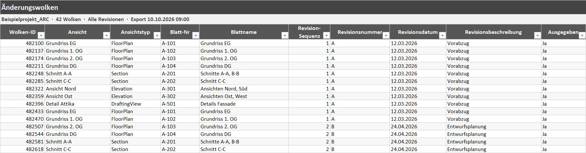
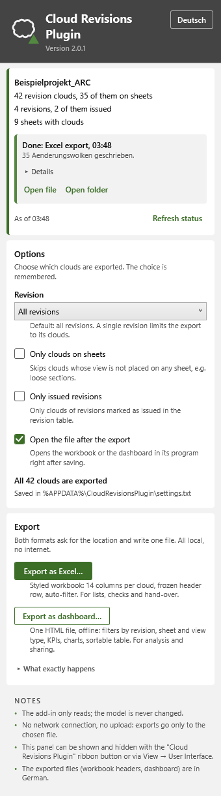
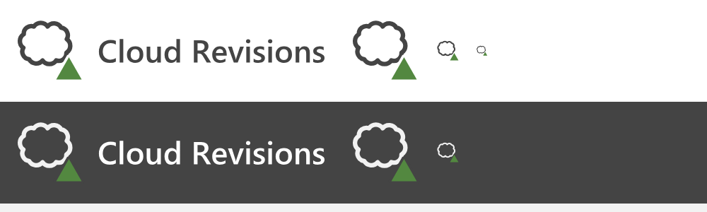

Cloud Revisions
One list of every change marked on the drawings.
- C#
- Revit API 2023 to 2027
- .NET Framework 4.8 / .NET 8 / .NET 10
- dependency-free Excel and HTML
When a drawing changes, designers mark the change with a revision cloud, a wavy outline with a revision number next to it. On a big project there are hundreds of them spread over many drawing sheets. Cloud Revisions collects them all into one list, so anyone can see what changed, where, and in which revision.
The problem
Keeping track of which revision clouds are on which sheets, and under which revision, usually means clicking through the sheets one by one.
What it does
Revision clouds are notes drawn on the drawings, and Autodesk's online data services either do not provide them or provide them only in part. The only complete source is Revit itself, so this is a Revit add-in.
It lists every revision cloud in the open model with its view, the sheet it appears on and all its revision details: sequence, number, date, description, whether it has been issued, and by and to whom. It then exports a formatted Excel workbook or a single-file HTML dashboard with filters similar to Power BI. Everything sits in one panel on its own Revit tab, in German or English.
Features
- Lists every revision cloud in the open model
- For each cloud: ID, view and view type, the sheet it appears on, revision sequence, number, date, description, issue status, issued by and to, comment and mark
- Filters by revision, by clouds on sheets only, and by issued revisions only
- Formatted Excel workbook with a fixed header row and filters
- Offline HTML dashboard with summary tiles, filter buttons, linked charts and a searchable, sortable table
- Neither export needs Excel, online resources or internet access
- One panel on its own Revit tab, in German or English, with an explanation for every option
- Revit 2023 to 2027, no extra software needed
Terms on this page
- Revit
- Autodesk's main software for designing buildings as BIM models. Most architects and engineers use it.
- Add-in
- A small program that runs inside another program, here inside Revit or Navisworks, and adds new buttons and features to it.
- Sheet
- A drawing page in Revit, ready to print or send out.
- Power BI
- Microsoft's software for interactive charts and dashboards.
See it
Screenshots & demos



